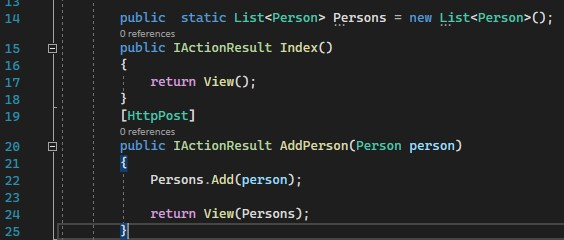
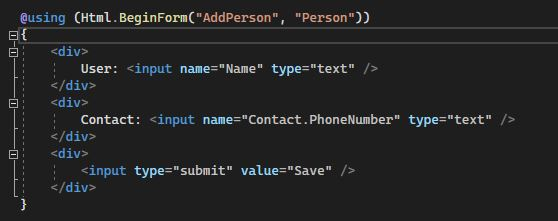
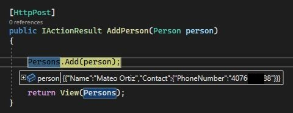
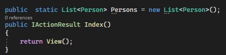
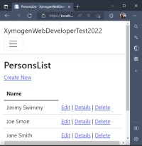

Web Developer Test Question 1
Gist
Basically, to invoke the ASP.NET MVC Controller Action method by an Http Post in the Razor View (.cshtml) and, once the data is returned, the new Person object is to be added to the List Collection.
Question: Add a new Person object to the List collection. Here is my answer on my workspace.
- Defined the Action provided.

- Added the Razor sytax provided.

- Invoke Action, by populating the User and the Contact field, and posting it by hitting the Save button.
- Success!, the Person object is added to the Persons list.

This is very bare and minimal, so I embellished the answer with a full-flegde process that not only adds the Person to the List but also persists him in a JSON file, and even used the Inversion of Control (IoC) pattern in the accomplishmet of it. This is a much better reflection my skills as a Web Developer.
NOW GO LOOK AT THE EMBELLISHED ANSWER!
This answer demonstrates the full and apropiate process of adding a object to an ASP.NET Project
- Added controller. (NOTE: I am using Visual Studios 2022 Comunity Edition.)
- Used the empty controller template and named it PersonController.
- Defined the Person class and the Contact class and added them to the Models folder provided by default in a ASP.NET MVC Web Application.

- Declared and instantiated the static List Persons class.

- Added a JSON file to act as the persistance layer (database), and place it in a folder named data in the wwwroot section of the solution. Made sure JSON was valid.


- Add Services folder to the solution, define a class entitled JsonPersonService and added it to the Services folder. The JsonPersonService deserializes the JSON file for consumption.

- Registered the Service in the Program.cs file. NOTE: The Startup.cs no longer exists in an ASP.NET solution. All configurations are done in the Program file in .NET 6.

- Passed the Service into the Controller, invoked the Action to populate a list and pass the list on the View

- Entered the following path (localhost:port).../Person/PersonList in the browser address bar. Ran the application, and success!.

- Now, I get to the core answer, which is to add a new Person object to the list. However, I went beyond and added the Person object to a persistance layer (persons.json).
- I defined the Action provided (Pretty, much exactly as the bare answer above).
- Add the Razor sytax provided. But where? I decided for the Index View.
- Navigate to the Person/Index, populated the User and the Contact field, and posted it.
- Success!, like above, the Person object is added to the Persons list.